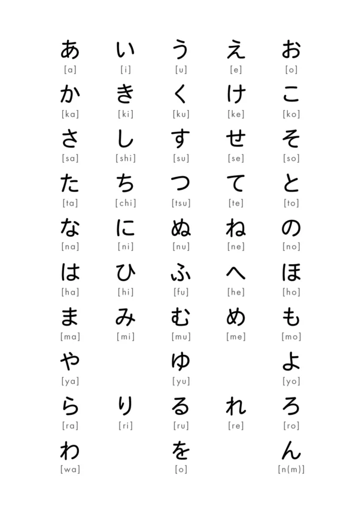
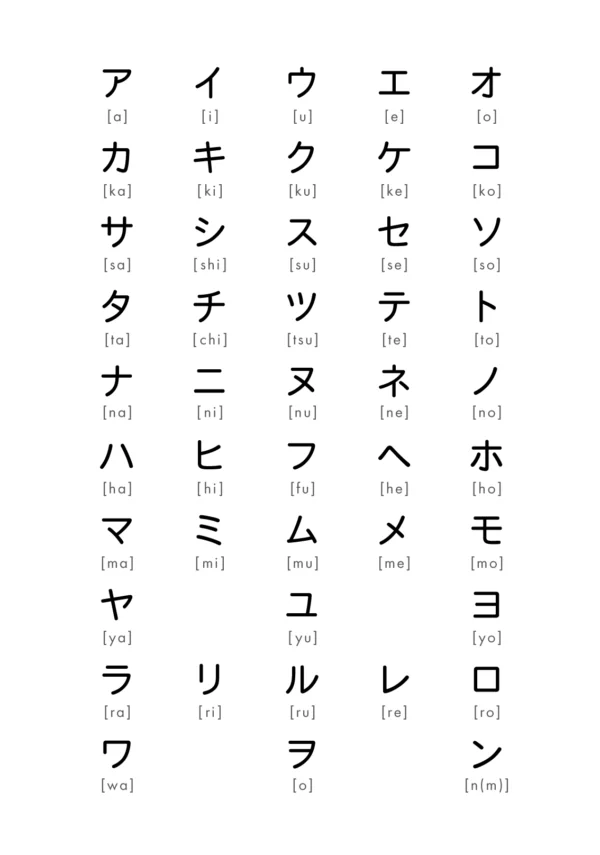
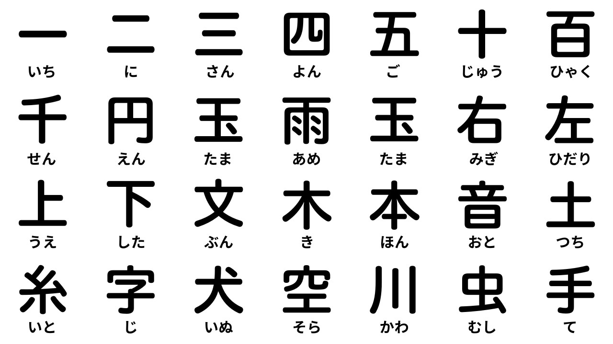

Hiragana script
Hiragana (ひらがな) is a phonetic syllabary,
or script, used in the Japanese writing system.
It is one of three scripts used in Japanese,
along with katakana and kanji.

Katakana script
Katakana (カタカナ) is a Japanese syllabary script
used for foreign loanwords, onomatopoeia, scientific
terms, and emphasis, distinct from hiragana which
is used for native Japanese words. It consists of
angular, straight-lined characters that represent
the same sounds as hiragana but have a different
visual style. Katakana is one of the three main
writing systems in Japanese, along with hiragana
and kanji.

Kanji script
Kanji are logographic characters, or Chinese characters,
that were adapted from China and are used in the Japanese
writing system along with the phonetic scripts hiragana
and katakana. Each character represents a meaning and a
word, and they are used primarily for nouns, verb stems,
and adjectives, while kana are used for native words,
grammatical particles, and endings.
Learning kanji is essential for reading and writing
Japanese, and while there are tens of thousands of
characters, an official list of 2,136 general-use kanji
is taught in schools.